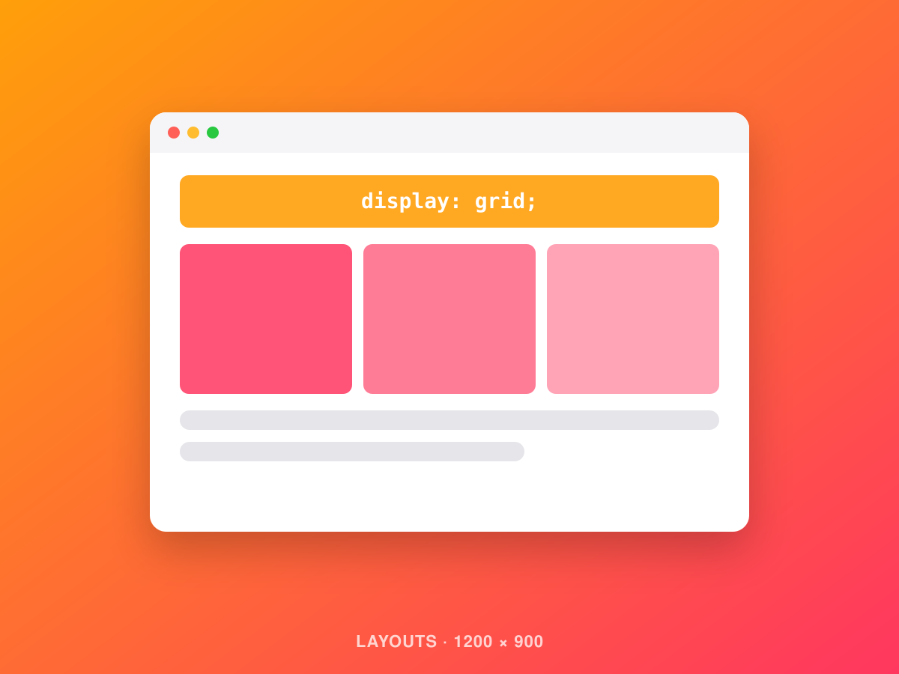
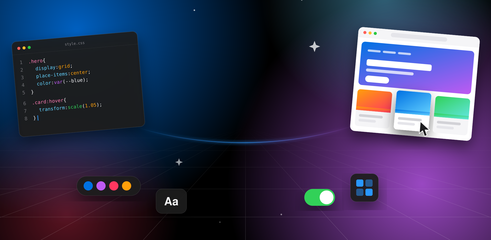
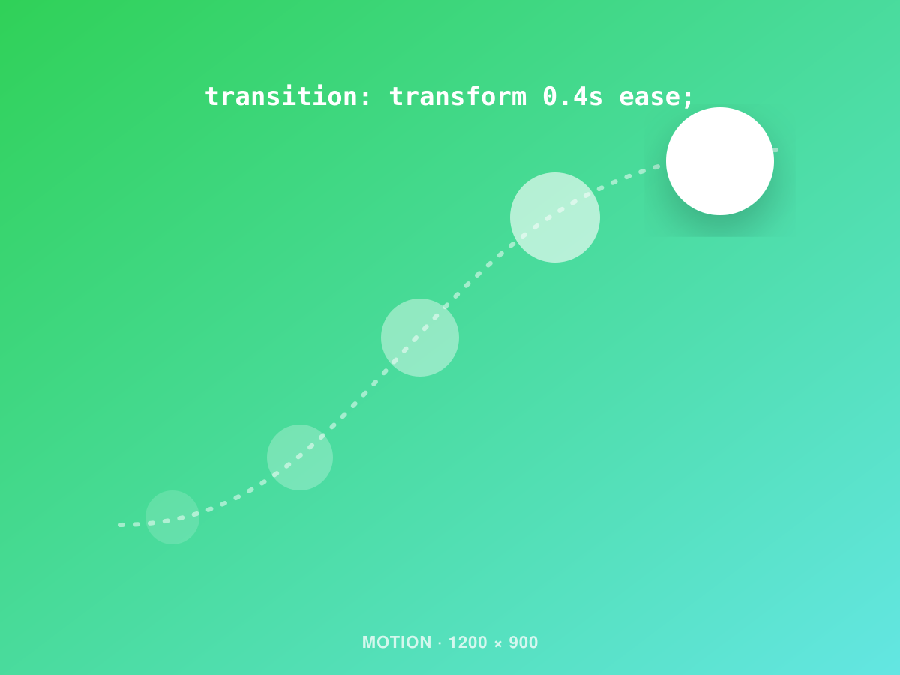
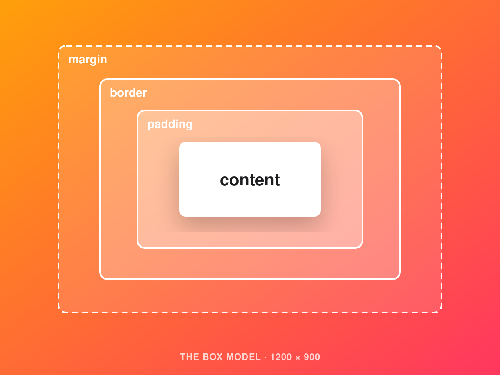
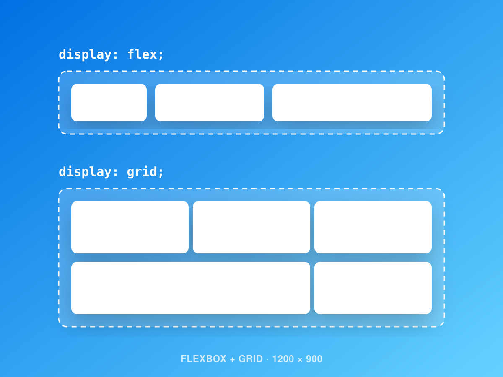
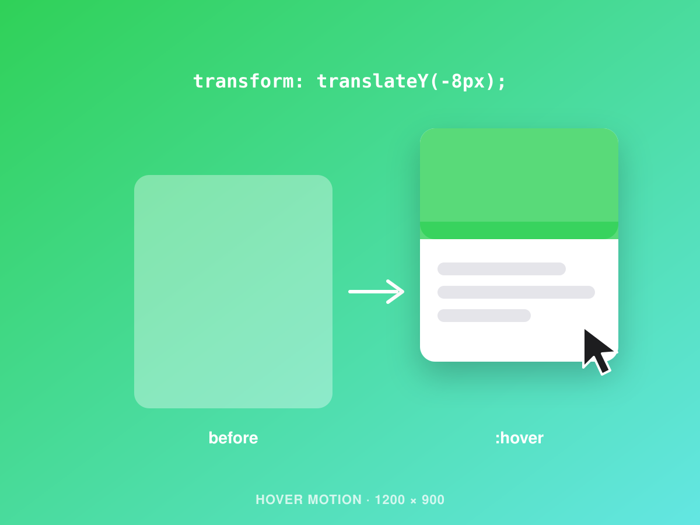

01
Layouts
Use Flexbox and Grid to build pages that adapt to any screen, from phone to desktop.

Web CSS Design Template
A step-by-step path from your first selector to dynamic, responsive websites.
What You'll Be Able to Build

01
Use Flexbox and Grid to build pages that adapt to any screen, from phone to desktop.

02
Store colors, fonts and spacing as tokens, so one edit restyles the entire site.

03
Add transitions, hover effects and scroll animations that bring a page to life.
Step 1 · The Starting Point
Same content. Same HTML. The only difference is CSS.
Color
Typography
Spacing
Layout
Motion

Step 2 · The Foundation
Every element is a box made of content, padding, border and margin. Learn how selectors target elements, how the cascade decides which rule wins, and why a reset like margin: 0 gives you a clean start.

Step 3 · Layout and Systems
Flexbox arranges items in a row or column. Grid builds full page layouts. Design tokens keep every color and space consistent, so the site feels like one system instead of a collection of pages.

Step 4 · Make It Dynamic
Transitions smooth out hover states, keyframe animations add movement, and scroll-driven effects reveal content as visitors read. Motion comes last, after the layout works without it.
Try It
Each color below changes a single line of CSS. Pick one, then scroll back up and see what changed.
--color-accent: var(--blue);